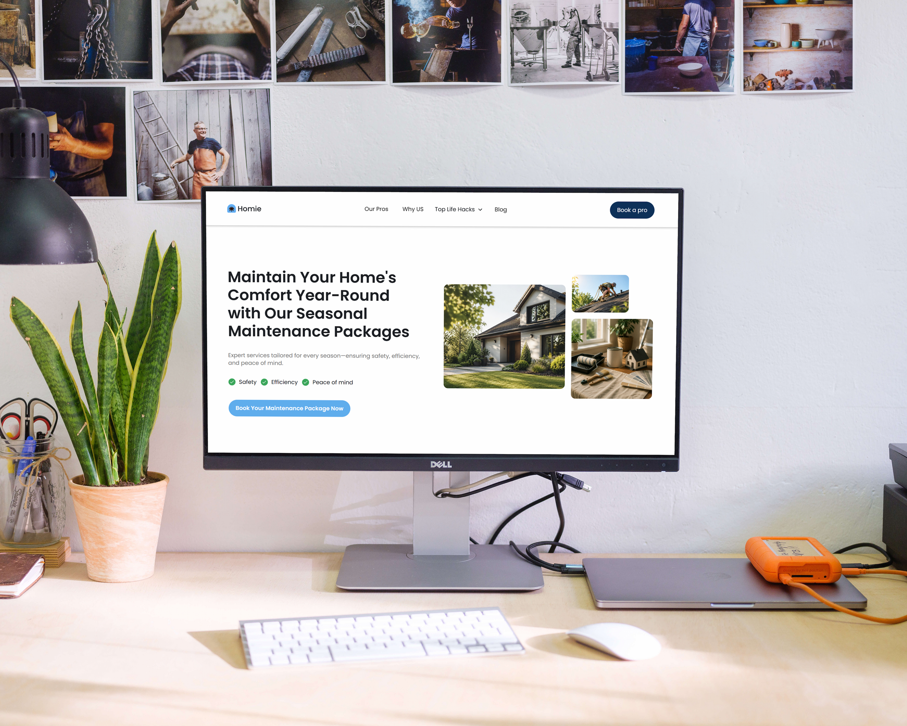
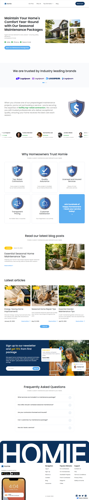
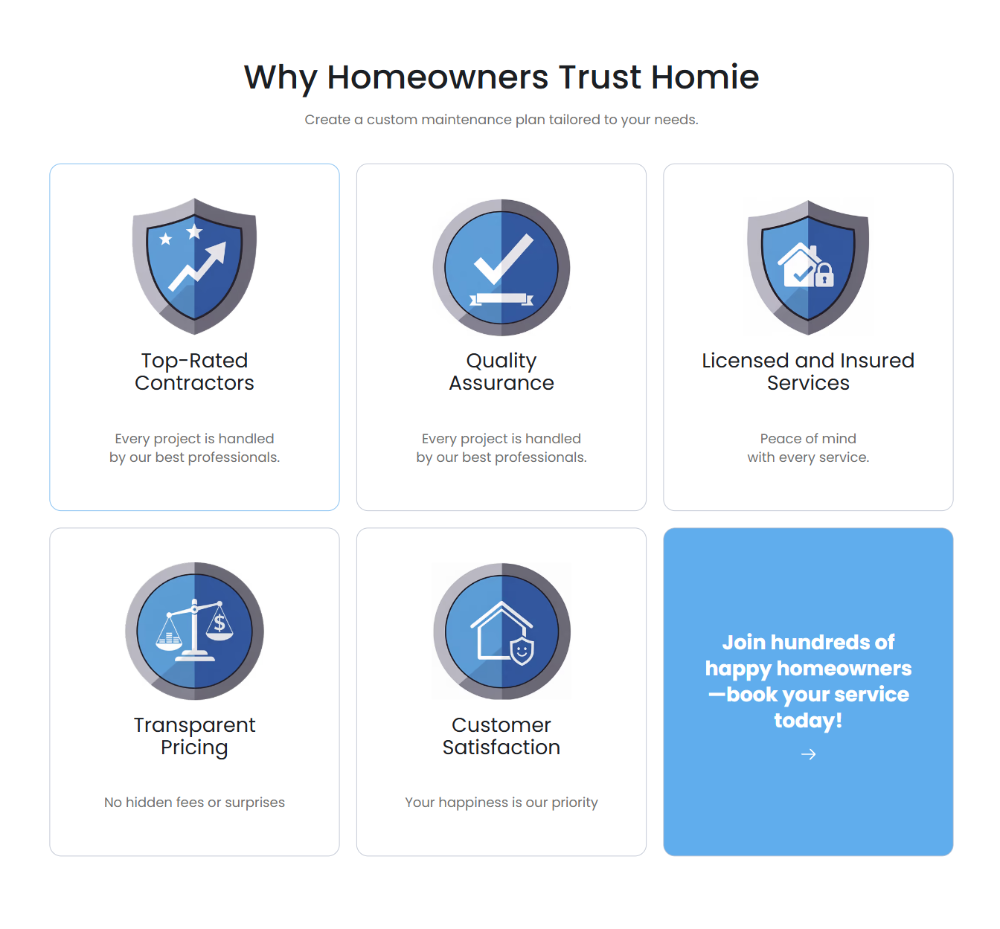
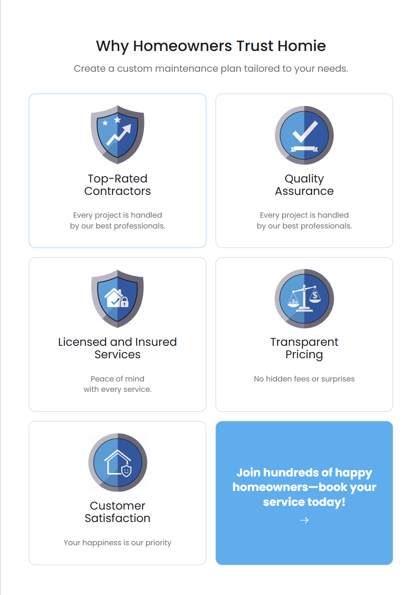
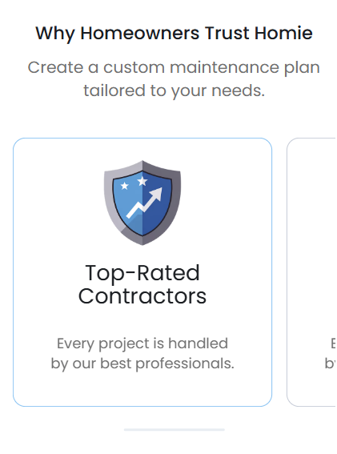
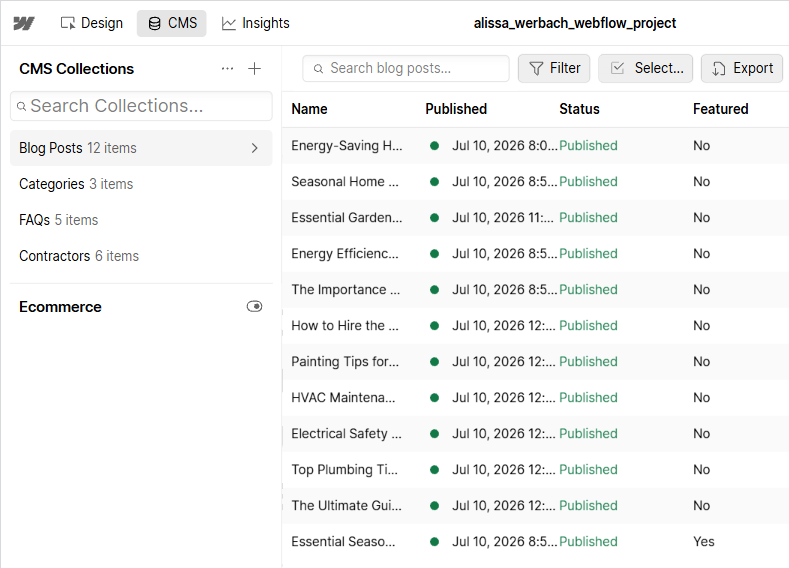
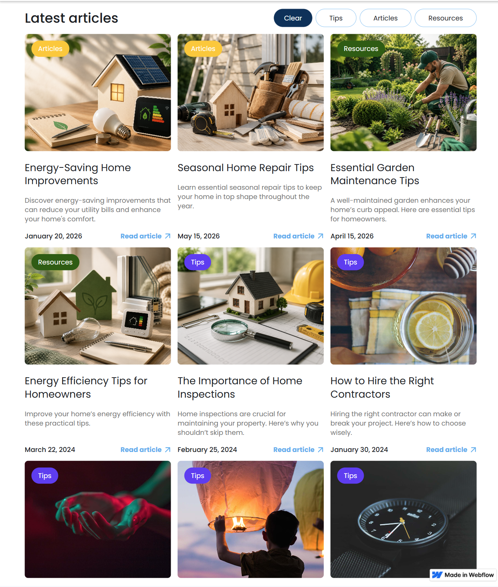
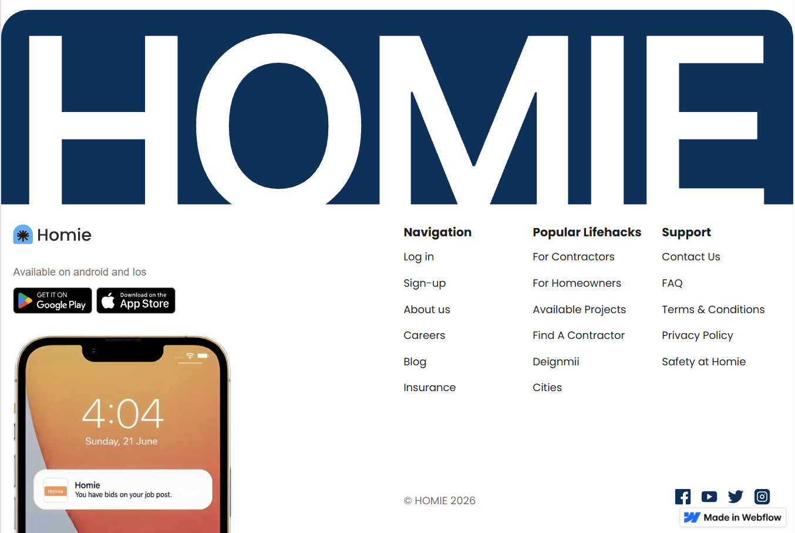

WEBFLOW DEVELOPMENT · CASE STUDY
Homie
Implementation of an existing UI design in Webflow, focused on responsive layouts, reusable components and CMS-powered content.
View Live Website
Project Overview
Homie is a study project based on a provided desktop UI design. My task was to turn the design into a functional Webflow website, build its content structure and extend the experience beyond the original desktop layout.
Role
Webflow Developer
Starting Point
Provided Desktop UI
My Contribution
Implementation & Responsive Adaptation
Project Type
Study Project
From Design to Webflow
I recreated the provided desktop design in Webflow, translating its visual structure into reusable components and consistent layout patterns. I focused on accurate spacing, typography, content structure and maintainable implementation.

Responsive Adaptation
Only the desktop design was provided. I created the tablet and mobile adaptations myself, restructuring layouts and adjusting spacing, typography and content positioning for smaller screens while preserving the original visual language.



CMS-Powered Content
I built the articles section using Webflow CMS, connecting reusable article cards to dynamic fields for titles, categories, dates, images and descriptions. New articles can be added and updated without changing the page layout.


LIVE PROJECT
Explore Homie
View the published Webflow implementation and explore the responsive layouts directly in the browser.
View Live Website
Next Project
GoWeekend